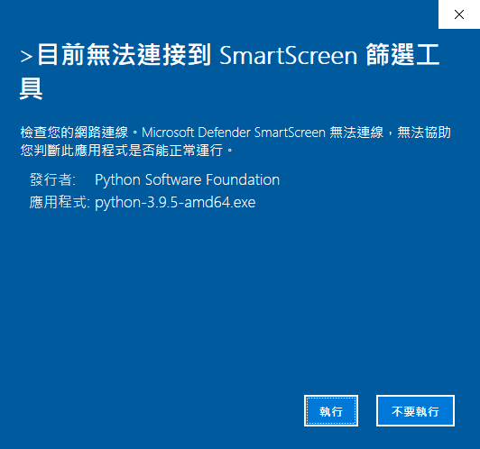
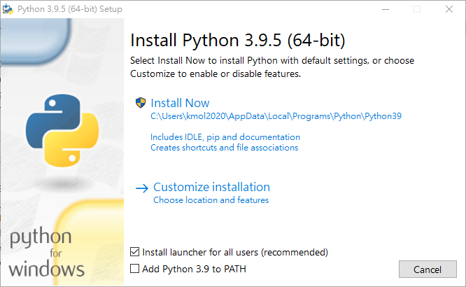
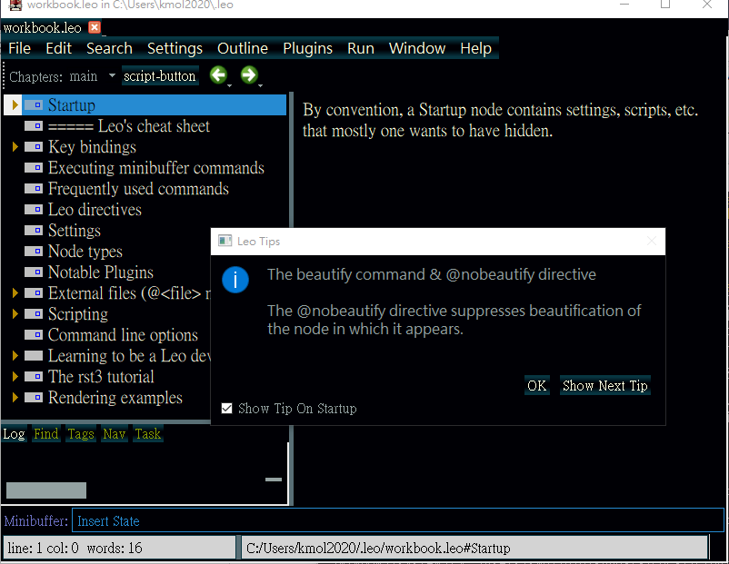

Reference <<
Previous Next >> Source codes
Application
如何使用 Leo Editor
理論上透過 pip install leo 就可以安裝 Leo Editor, 但是在 Windows, Mac 與 Ubuntu 安裝後的版本經常不一致, 導致許多用法上莫衷一是, 這裡將要針對這三套操作系統的 Leo Editor 應用加以介紹.
首先是在 Windows 10 操作系統中安裝 Leo Editor:
系統安裝版
當使用者從 https://www.python.org/downloads/windows/ 下載安裝 Python 3.9.5 時, Windows 10 會出現下列畫面, 表示 Windows 10 其實是希望使用者透過操作系統的 APP 模式安裝 Python. 因此以下自行安裝的 Python 3.9.5 後, 操作系統並不會將必要的 Python 執行路徑納入環境變數, 使用者必須自行設定.


直接在系統上安裝 Python 後, Python 3.9.5 位於 C:\Users\kmol2020\AppData\Local\Programs\Python\Python39\python.exe, 只不過並不在系統的環境變數 path 命令搜尋路徑中.
在系統中安裝 Python3.9.5 後, 利用 C:\Users\kmol2020\AppData\Local\Programs\Python\Python39\scripts\pip.exe list 查詢目前所安裝的模組之前, 必須先將操作系統的代理主機設定關閉後才可正確查詢, 結果為:
Package Version
---------- -------
pip 21.1.1
setuptools 56.0.0
接下來若要利用此一 Python 安裝 Leo Editor, 由於需要在系統目錄中寫入, 因此所啟動的 cmd 必須以管理者身分啟動, 指令為:
C:\Users\kmol2020\AppData\Local\Programs\Python\Python39\python.exe -m pip install leo
為了執行方便, 可以將 C:\Users\kmol2020\AppData\Local\Programs\Python\Python39\ 納入操作系統的命令搜尋路中中.
請注意: C:\Users\kmol2020\AppData\Local\Programs\Python\Python39\scripts\pip.exe install leo 命令遭到 Windows 10 版本 2004 拒絕執行, 必須採用 python.exe -m pip install leo 才行.
Leo Editor 安裝完成後, 利用 C:\Users\kmol2020\AppData\Local\Programs\Python\Python39\scripts\leo.exe 即可開啟. 但是針對啟動時採中文模式時, 將無法順利輸入英文 string 而無法開啟 Leo Editor. 這時就必須執行 leo.exe 之前, 先將中文模式轉為英文模式之後, 再執行 leo.exe, 否則無法建立起動 Leo Editor 必要的 .leoID.txt 檔案.
此一 .leoID.txt 位於 C:\Users\用戶名稱\.leo 目錄下. 且這時所安裝的 Leo Editor 版本為 6.3 版. 啟動時的畫面如下:

當上述以 python.exe -m pip install leo 之後, 除了 Leo Editor 之外, 其實也同時安裝了以下模組:
C:\WINDOWS\system32>C:\Users\kmol2020\AppData\Local\Programs\Python\Python39\python.exe -m pip list
Package Version
----------------------------- ---------
alabaster 0.7.12
appdirs 1.4.4
astroid 2.5.6
asttokens 2.0.5
attrs 21.2.0
Babel 2.9.1
black 21.5b0
certifi 2020.12.5
chardet 4.0.0
click 7.1.2
colorama 0.4.4
dialite 0.5.3
docutils 0.17.1
flexx 0.8.1
idna 2.10
imagesize 1.2.0
ipython-genutils 0.2.0
isort 5.8.0
Jinja2 2.11.3
jsonschema 3.2.0
jupyter-core 4.7.1
lazy-object-proxy 1.6.0
MarkupSafe 1.1.1
mccabe 0.6.1
meta 1.0.2
mypy-extensions 0.4.3
nbformat 5.1.3
packaging 20.9
pathspec 0.8.1
pip 21.1.1
pscript 0.7.5
pyflakes 2.3.1
Pygments 2.9.0
pylint 2.8.2
pyparsing 2.4.7
PyQt5 5.15.4
PyQt5-Qt5 5.15.2
PyQt5-sip 12.8.1
PyQtWebEngine 5.15.4
PyQtWebEngine-Qt5 5.15.2
pyrsistent 0.17.3
pyshortcuts 1.8.0
pytz 2021.1
pywin32 300
regex 2021.4.4
requests 2.25.1
setuptools 56.0.0
six 1.16.0
snowballstemmer 2.1.0
Sphinx 4.0.0
sphinxcontrib-applehelp 1.0.2
sphinxcontrib-devhelp 1.0.2
sphinxcontrib-htmlhelp 1.0.3
sphinxcontrib-jsmath 1.0.1
sphinxcontrib-qthelp 1.0.3
sphinxcontrib-serializinghtml 1.1.4
toml 0.10.2
tornado 6.1
traitlets 5.0.5
urllib3 1.26.4
webruntime 0.5.8
windows-curses 2.2.0
wrapt 1.12.1
建立可攜版本
由於上述操作系統安裝 Python 3.9.5 的過程並不在 Windows 10 2004 版本 (2020.04 釋出的版本) 系統的規劃中, 因此採用可攜化安裝的方式, 其可控性較高, 且透過隨身碟方式執行, 可以在不同電腦中保有統一的個人設定, 因此比較建議採用可攜版本安裝 Python 3.9.5.
在 Windows 10 建立可攜 Python 3.9.5 執行環境的工具是 https://github.com/Bioruebe/UniExtract2, 可以解開 python-3.9.5-amd64.exe, 第一階段將分別解開為: core.msi, dev.msi, doc.msi, exe.msi, lib.msi, tcltk.msi 與 tools.msi, 第二階段再將這些 .msi 解開到同一目錄, 即取得可攜系統 Python39 目錄的內容.
可攜系統的目錄中分別帶有 data 目錄與 start.bat 及 stop.bat 等啟動與關閉檔案.
data
start.bat
stop.bat
而 data 目錄中則有以下目錄:
python39
portablegit
PUTTY
tcc
wscite
home
tmp
start.bat 檔案內容:
@echo off
set Disk=y
subst %Disk%: "data"
%Disk%:
set HomePath=%Disk%:\home
set HomeDrive=%Disk%:\home
set Home=%Disk%:\home
set USERPROFILE=%Disk%:\home
REM 將系統 Python 程式的 io 設為 utf-8
set PYTHONIOENCODING="utf-8"
set PYTHONPATH=%Disk%:\Python39\DLLs;%Disk%:\Python39\Lib;%Disk%:\Python39\Lib\site-packages;
set PYTHONHOME=%Disk%:\Python39
REM for putty
set GIT_SSH=%Disk%:\putty\plink.exe
REM 設定跟 Python 有關的命令搜尋路徑
set path_python=%Disk%:\Python39;%Disk%:\Python39\Scripts;
REM 設定跟Git 有關的命令搜尋路徑
set path_git=%Disk%:\portablegit\bin;
set path_tcc=%Disk%:\tmp\tcc\win32;
path=%Disk%:;%path_python%;%path_git%;%path_tcc%;%path%;
start /MIN cmd.exe
start /MIN cmd.exe
start /MIN cmd.exe
start /MIN cmd.exe
start /MIN %Disk%:\wScite\SciTE.exe
start /MIN %Disk%:\wScite\SciTE.exe
Exit
stop.bat 檔案內容:
@echo off
set Disk=y
path=%PATH%;
taskkill /IM python.exe /F
taskkill /IM pythonw.exe /F
taskkill /IM scite.exe /F
REM 終止虛擬硬碟與目錄的對應
subst %Disk%: /D
REM 關閉 cmd 指令視窗
taskkill /IM cmd.exe /F
EXIT
根據以上步驟所完成的可攜 Python 3.9.5 + Leo Editor 的系統: portable_py395.7z (under python At mde)
Reference <<
Previous Next >> Source codes